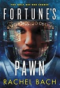

September
 The book for this month is Fortunes's Pawn written by Rachel Bach.
Summary
"Devi Morris isn't your average mercenary. She has plans. Big ones. And a ton of ambition. It's a combination that's going to get her killed one day - but not just yet.
That is, until she just gets a job on a tiny trade ship with a nasty reputation for surprises. The Glorious Fool isn't misnamed: it likes to get into trouble, so much so that one year of security work under its captain is equal to five years everywhere else. With odds like that, Devi knows she's found the perfect way to get the jump on the next part of her Plan. But the Fool doesn't give up its secrets without a fight, and one year on this ship might be more than even Devi can handle." (amazon.com)
Thoughts
I have not finished the book yet, but so far I just love it. I can't wait to tell you more of my thoughts when I finish.